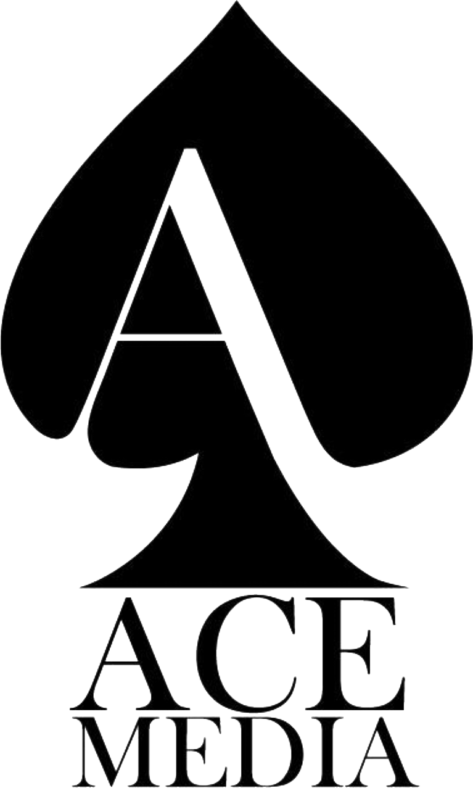
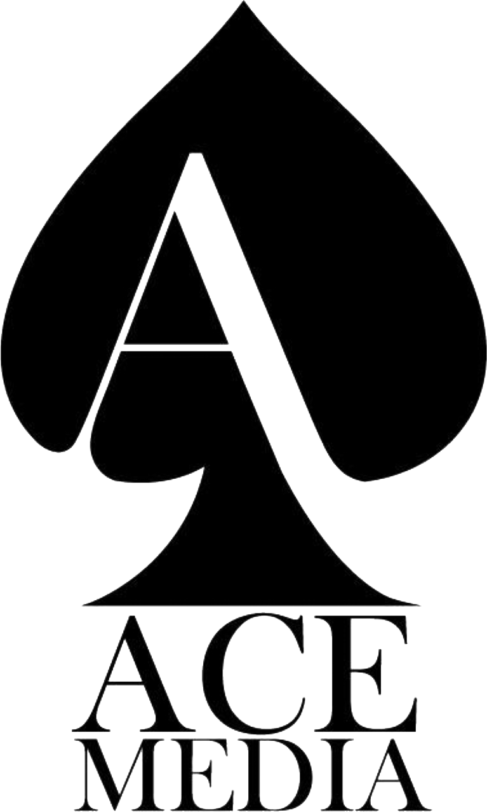

Mirna vzgoja: Kako vzgajati brez kričanja
Odkrijte učinkovite in ljubeče pristope za vzgojo vaših otrok
Po ekskluzivni ceni 9.99€
Odkrijte učinkovite in ljubeče pristope za vzgojo vaših otrok
 

"Neverjetno! 'Mirna vzgoja: Kako vzgajati brez kričanja' je odprla nov pogled na način, kako komuniciramo z našimi otroki. Naučila nas je, da je potrpljenje ključ do boljšega razumevanja in da je poslušanje največ, kar lahko ponudimo. Priporočam vsaki družini."

"Po branju te knjige sem se zavedel, kako pomembna je konsistenca in mirnost v vzgoji. Tehnike, ki jih avtor predlaga, so preproste, a učinkovite, in že vidimo velike spremembe v obnašanju naših otrok. To je knjiga, ki bi jo moral prebrati vsak starš."

"Ta knjiga mi je dala upanje in orodja, da postanem boljši starš. Zdaj razumem, da kričanje ni odgovor in da lahko z ljubeznijo in doslednostjo dosežemo veliko več. 'Mirna vzgoja: Kako vzgajati brez kričanja' je obvezno branje za vse, ki želijo izboljšati družinske odnose."
"Knjiga 'Mirna vzgoja: Kako vzgajati brez kričanja' je bila za mene pravo odkritje. Metode in nasveti v njej so mi pomagali razumeti, kako pomembno je ohranjati mirno in spodbudno okolje doma. Rezultati so vidni vsak dan, moji otroci so bolj sodelujoči in srečnejši. Vsakemu staršu, ki išče harmonijo v družinskem življenju, priporočam to branje!"
Spoštovani starši in skrbniki,
Predstavljajte si, da se konča vsakodnevni boj z uporom in kričanjem – "Mirna vzgoja: Kako vzgajati brez kričanja" je vaša rešitev. Ta knjiga ni le še en vzgojni priročnik; je rezultat let raziskovanja in resničnih izkušenj, ki jih delijo starši z vsega sveta. Razlikuje se po svojem empatičnem pristopu in znanstveno podprtih metodah, ki nudijo trajne rezultate.
Problem, ki ga rešujemo: Vsak starš se sooča s trenutki, ko se zdi, da je kričanje edini način, da se sliši. A kaj, ko kričanje ne zgradi mostov, ampak postavlja zidove.
Naša rešitev: "Mirna vzgoja" vam ponuja alternativo – orodja za gradnjo odnosa, ki temelji na spoštovanju in razumevanju. Ne samo da se boste naučili, kako ostati mirni v stresnih situacijah, ampak boste otroku pomagali razviti veščine, ki mu bodo koristile celo življenje.
Mirna vzgoja: Kako vzgajati brez kričanja" je knjiga, ki na novo osvetljuje koncepte vzgoje. V njej avtor raziskuje pomen mirne komunikacije in kako le-ta vpliva na razvoj otroka. Knjiga bralca popelje skozi različne vzgojne situacije, od upiranja in izpadov jeze do vsakdanjih izzivov, kot so jutranje priprave na šolo in večerne rutine. Avtor predstavlja alternative tradicionalnim, avtoritarnim vzgojnim metodam, ki pogosto vodijo v kričanje in konflikte. S praktičnimi primeri in lahko razumljivimi nasveti "Mirna vzgoja" staršem ponuja orodja, da se soočijo z izzivi brez izgube živcev. Od strategij za spodbujanje sodelovanja do metod za učinkovito reševanje konfliktov, ta knjiga zagotavlja celostni pristop k vzgoji. Poseben poudarek je na razvoju čustvene inteligence tako pri otrocih kot pri starših, kar je ključno za vzpostavljanje globokega in trajnega medsebojnega razumevanja. Avtor podaja tudi nasvete za samopomoč za starše, ki se soočajo s stresom, in poudarja, kako je skrb za lastno duševno zdravje nujna za vzpostavitev zdravega domačega okolja. Knjiga je napisana s sočutjem in razumevanjem, kar bralcu omogoča, da se poistoveti z avtorjevimi izkušnjami in nasveti. "Mirna vzgoja: Kako vzgajati brez kričanja" ni le priročnik za starše, ampak je tudi izvor navdiha in podpore za vse, ki si želijo ustvariti harmoničen dom
Praktični Vodnik: Knjiga ponuja niz praktičnih nasvetov in
tehnik za moderno starševstvo, ki temelji na najnovejših psiholoških
raziskavah.
Razumevanje otrokovega razvoja: Podrobno obravnava različne
faze otrokovega čustvenega in kognitivnega razvoja in kako lahko
starši podpirajo ta razvoj.
Empatija in Komunikacija: Poudarja pomen empatije in učinkovite
komunikacije med starši in otroki za vzpostavljanje močnih družinskih
vezi.
Pozitivna Disciplina: Razlaga, kako lahko starši uporabljajo
pozitivno disciplino za vzgojo odgovornih in samostojnih otrok.
Osebna Rast: Spodbuja starše k samorefleksiji in osebnemu
razvoju, da postanejo zgled svojim otrokom.
Primeri iz Življenja: Vključuje resnične primere in študije
primerov, ki ilustrirajo ključne koncepte v akciji.
Vaje in Dejavnosti: Vsebuje interaktivne vaje in dejavnosti,
ki jih lahko starši izvajajo s svojimi otroki.
Za Starše Vseh Starostnih Skupin: Ne glede na to, ali ste novi
starš ali izkušen vzgojitelj, knjiga ponuja vpoglede, ki so koristni
na vseh stopnjah starševstva.
Naš pristop je unikaten, ker združuje teorijo in praktične izkušnje ter je enostaven za uporabo v vsakodnevnem življenju. Poudarek ni samo na "kaj narediti", ampak "kako narediti".
Produkt lahko prenesete neposredno po spletni nakupu, dostop pa vam bo omogočen takoj.
Sem priznan strokovnjak z dolgoletnimi izkušnjami na področju vzgoje in psihologije otrok.
V času nenehnih sprememb in izzivov je ključnega pomena, da razvijete trajnostne in učinkovite vzgojne pristope.
Želimo, da je naš produkt dostopen širšemu krogu ljudi, obenem pa zagotavljamo visoko kakovost vsebine.
Če knjiga ne izpolni vaših pričakovanj, vam ponujamo garancijo zadovoljstva. Pišite nam, in skupaj bomo našli rešitev.
Postanite del naše skupnosti in odkrijte najboljše strategije za vzgojo otrok.
Kupi knjigo